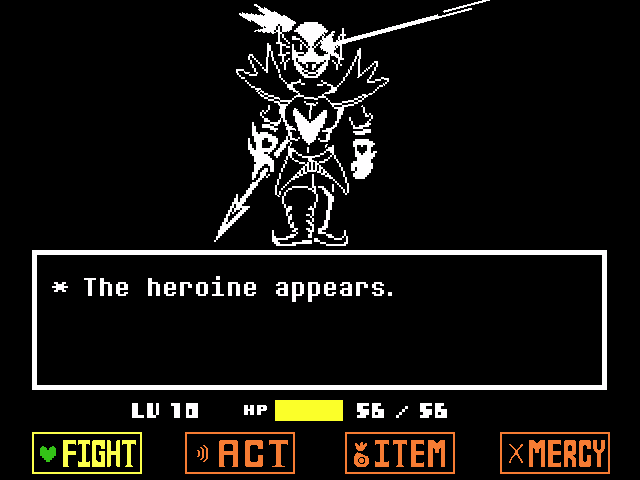

Undertale
¿Qué es undertale?
Undertale es un juego de rol que utiliza una perspectiva de arriba hacia abajo. En el juego, el jugador controla a un niño y completa objetivos para progresar en la historia. Los jugadores exploran un mundo subterráneo lleno de ciudades y cuevas, y deben resolver numerosos acertijos en su viaje.
¿Cuál es la historia de la banda sonora?
UNDERTALE Soundtrack es el álbum de la banda sonora de Undertale que se lanzó el 15 de septiembre de 2015. Está disponible para su compra en Bandcamp, Steam, iTunes y el sitio web del juego, y está disponible en línea de forma gratuita en Spotify y YouTube. Todas las pistas están compuestas por Toby "Radiation" Fox con FL Studio 10.
Tabla de la musica
Titulo |
Historia |
Duración de la canción |
|---|---|---|
Fallen Down |
Durante la introducción de Toriel Después de la prueba de independencia de Toriel Cuando Toriel lleva a la protagonista a su casa. Reducido después de perdonar a Toriel Disminuyó la velocidad después de descansar a Toriel y dormir en la cama. |
57 segundos |
Anticipación |
Durante los encuentros con Dummy y el primer Froggit Al luchar contra el muñeco alegre durante la ruta del genocidio Reducido durante la pelea de Monster Kid en la Ruta del Genocidio Disminuyó la velocidad cuando Flowey comienza a temer al protagonista en New Home durante la Ruta del Genocidio. Ralentizado en el final pacifista sin alma |
22 segundos |
Batalla contra un verdadero héroe
El título es una obra de teatro con los títulos de la música de batalla de la serie Mother, mientras que la última parte de la música hace referencia a la serie de videojuegos Touhou. Tiene la misma melodía que An Ending, y la última parte tiene la misma melodía de Don't Give Up. La melodía inicial se reutiliza más tarde en Power of "NEO". La melodía inicial suena similar a Versus, una canción de Homestuck.
